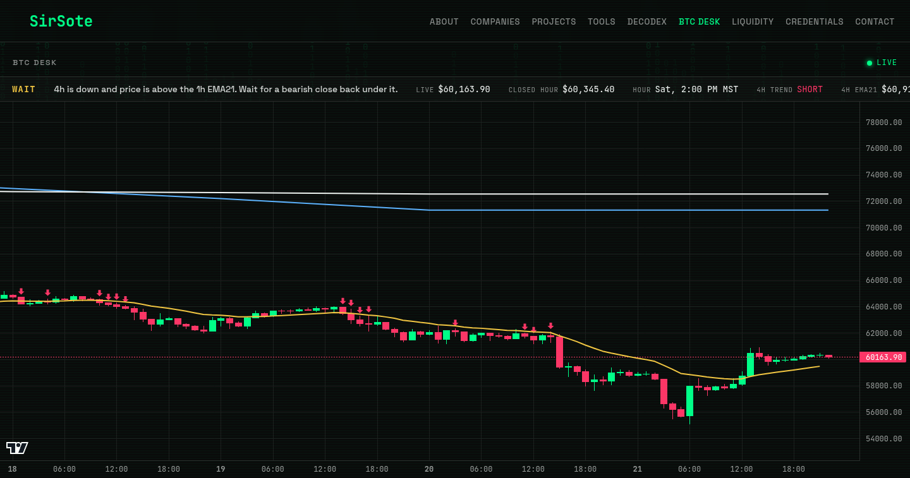

BTC Desk · US close MST Day WAIT · $60,345.40 Swing SHORT Hold SHORT Book agrees Unchanged since 2:16 PM MST 4h is down and price is above the 1h EMA21. Wait for a bearish close back under it. Bitcoin rebounds above $60,000 after $1.8 billion crypto liquidation wave — CoinDesk https://www.coindesk.com/markets/2026/11/21/bitcoin-bounces-9-from-two-year-low-to-retake-usd60-000-as-traders-eye-monday-s-stock-open noise, regime unchanged https://sirsote.com/p/btc-desk/ Rules readout. The next move can ignore it.
